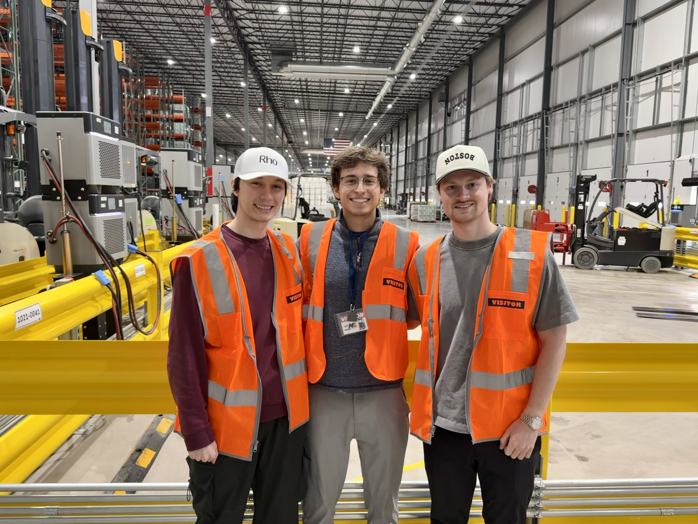

Projects & Interests
What I am building, studying, and training for.
Movomint
Logistics platform my co-founder and I built to help warehouses run more smoothly. Most facilities we talked to were coordinating shipments over phone calls and spreadsheets scheduling, dock assignments, driver check-ins, all manual. We put it into one system so operators can see what's happening at their facility in real time. Built with TypeScript and React, and we keep iterating based on what the people using it actually need.

Facsimile
A modular personal AI memory bank. The idea was to build something that could ingest your own data starting with iMessage conversations and let you search and interact with it through an AI-powered interface. Split into a Python backend for data processing and a TypeScript frontend. Still a work in progress but the core pipeline works.
TruckTetris
A dock scheduling optimization tool built in TypeScript. The name came from the problem it's solving fitting trucks into dock slots is basically Tetris. It's a logistics-adjacent project that grew out of work on Movomint, focused on visualizing and improving how facilities assign docks to incoming loads.
Pydaline
Network performance analytics system written in Python. Built to monitor and visualize network metrics in a way that's actually useful for diagnosing issues. Good exercise in working with real-time data pipelines and charting.
Lookout
A TypeScript project focused on monitoring and observability. Built to get hands-on experience with how production systems track health, handle alerts, and surface problems before they become outages.
Other things I've worked on
Get in Touch
Interested in collaborating or chatting about any of the above? Reach out.